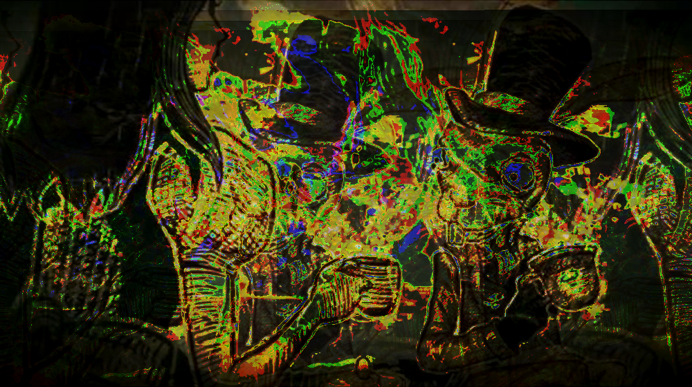

Glitch Series
The series of images I have manipulated are pulled from the cut scenes of one of my favorite video game's titled: Alice Madness Returns (2011) by American Mcgee. The purpose of the glitch is to represent the distorted perspective of the game's protagonist (Alice) as she hallucinates the world of Wonderland due to her trauma (house burning and family dying) putting her in a warped mental state.

